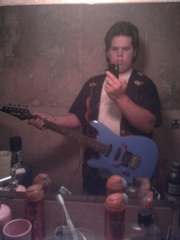
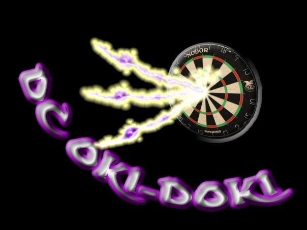

Het ontstaan van mijn passie voor muziek.
Sinds mijn kindertijd ben ik gepassioneerd door muziek. Toen ik 8 jaar was, ging ik reeds met mij moeder mee naar de gilde. Hier nam ik actief mee aan het volksdansen.
Daarnaast bespeelden enkele familieleden een instrument, waardoor ik ook vaak met muziek geconfronteerd werd. Verschillende jaren later kreeg ik bij vrienden de muziekmicrobe verder te pakken. Doordat mijn beste kameraad gitaar leerde spelen.
Op mijn 16 jaar besloot ik om zelf gitaar te leren spelen. Als metal en rock fan was dit het ideale instrument om mijn lievelingsliedjes op te leren spelen. Hiervoor volgde ik enkele lessen akkoordenleer. Nadien heb ik door zelf te oefenen op mijn gitaar en you-tube filmpjes te bekijken nog veel bijgeleerd. Ondertussen heb ik reeds enkele liedjes goed onder de knie.
Ik heb ondertussen zelf twee elektrische gitaren in mijn bezit, al zou ik daar nog graag een akoestische gitaar willen bij hebben. Naast het bespelen van de gitaar, ben ik ook zeer geïnteresseerd in het zelf bouwen en repareren van gitaren. Hier ga ik misschien ooit nog wel een cursus over volgen. Voorlopig blijft dit bij het bekijken van you-tube filmpjes.
Het ontstaan van mijn passie voor de saxofoon
Mijn vrouw Anita is een gepassioneerde saxofoniste, die reeds 13 jaar de sopraan saxofoon bespeelt. Zij is al 12 jaar actief in meerdere fanfares samen met haar ouders, broer en nonkels. Vanaf het begin van onze relatie ging ik wekelijks mee naar de repetities van haar vaste fanfare.
Ook al zat ik daar gewoon te kijken naar hoe de muzikanten repeteerden, vond ik dit toch zeer fascinerend. Al gauw begon ik met vragen te stellen over haar instrument, de bewegingen van de dirigent, het verloop van de repetities en de jaarlijkse activiteiten. Daarom stelde zij niet veel later de vraag of ik ook saxofoon wilde leren.

Mijn passie voor muziek is reeds lang aanwezig, mijn vrouw Anita heeft deze enkel nog extra aangewakkerd waardoor ik dus besloot om saxofoon te leren spelen. Het was een zoektocht om de geschikte soort saxofoon te vinden voor mij, maar uiteindelijk koos ik voor de tenor saxofoon. De basis leerde ik van mijn vrouw, zij helpt mij nog steeds bij het oefenen.
Ondertussen ben ik reeds 6 jaar actief in de vaste fanfare van mijn vrouw en ga ik ook regelmatig helpen bij enkele van de andere fanfares. Omdat we beide het gevoel hadden dat we nog veel konden bij leren over de saxofoon hebben we 3 jaar geleden besloten om een opleiding aan de muziekschool te starten. Sinds 2 jaar ben ik ook actief in het bestuur van onze vaste fanfare; Koninklijke fanfare De Vrije Burgers Koningshooikt .
Mijn passie voor darts
Mijn vader beoefent de sport darts reeds sinds zijn 16 jaar. Het was voor mij dus een vast onderdeel van mijn leven vanaf ik geboren was. Thuis mocht ik af en toe al eens mee doen als mijn vader aan het trainen was. Meedoen met competitie heeft echter nog verschillende jaren geduurd. Dit omdat de competities in cafés plaats vonden en ik hier nog te jong voor was.
Vanaf mijn 16 jaar ongeveer nam mijn vader mij wel mee naar de competitie wedstrijden. In het begin mocht ik amper een wedstrijd meespelen omdat mijn vader van mening was dat ik eerst moest leren punten tellen. De eerste paar jaren was ik daardoor voornamelijk schrijver tijdens de wedstrijden. Op dat moment waren wij actief in de dartsploeg van café Okidoki.
Nadien mocht ik meer en meer zelf meespelen, waardoor ik ook beter werd in de sport. De laatste ploeg waarin ik meespeelde was DC De Jachthoeve. Momenteel ben ik 2 jaar niet meer actief in een dartsploeg omwille van de bouw van mijn woning en de huidige coronamaatregelen. Al ben ik wel van plan zodra de situatie het terug toelaat om deze sport opnieuw uit te oefenen.
Het ontstaan van mijn passie voor muziek.

Reeds vanaf jonge leeftijd hadden wij spelconsoles in huis. Mijn vader was namelijk zelf een fervente gamer. Wanneer er een nieuwe console op de markt was, kocht hij deze dan ook zo snel mogelijk. De eerste consoles waarop ik speelde waren de Atari, de Snes en de Sega.
Nadien kwamen de Ninentendo 64 – de gameboy en de playstation 1 in huis. Op dat moment was ik grote fan van pokemon. Ik dan ook bijna alle pokemon spelen in mijn bezit voor op de gameboy.
Tegen woorden ben ik vooral nog actief op de playstation 4. Al zal ik binnenkort de playstation 5 aanschaffen en zal de playstation 4 meer naar de achtergrond verhuizen. De voornaamste spelen in mijn bezit zijn fighters, RPG, avontuur en hack en slach spelen. Ik speel ook vaak online samen met mijn broer en vrienden.
Sinds ik samenwoon met mijn vrouw ben ik wel geminderd met gamen. Daar ik vroeger elke avond gamede tot zeer laat in de nacht, game ik nu enkele uurtjes per week. Dit voornamelijk als mijn vrouw niet thuis is of zelf met haar hobby’s of studies bezig is.